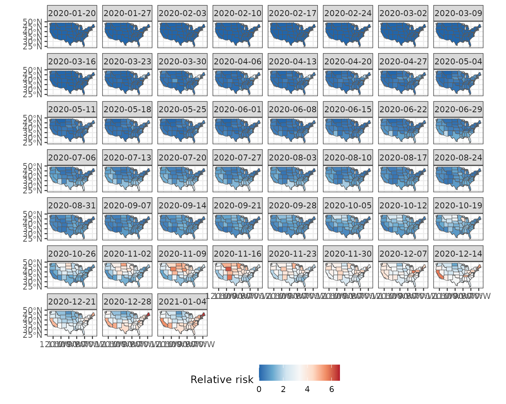
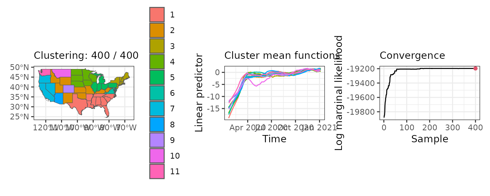
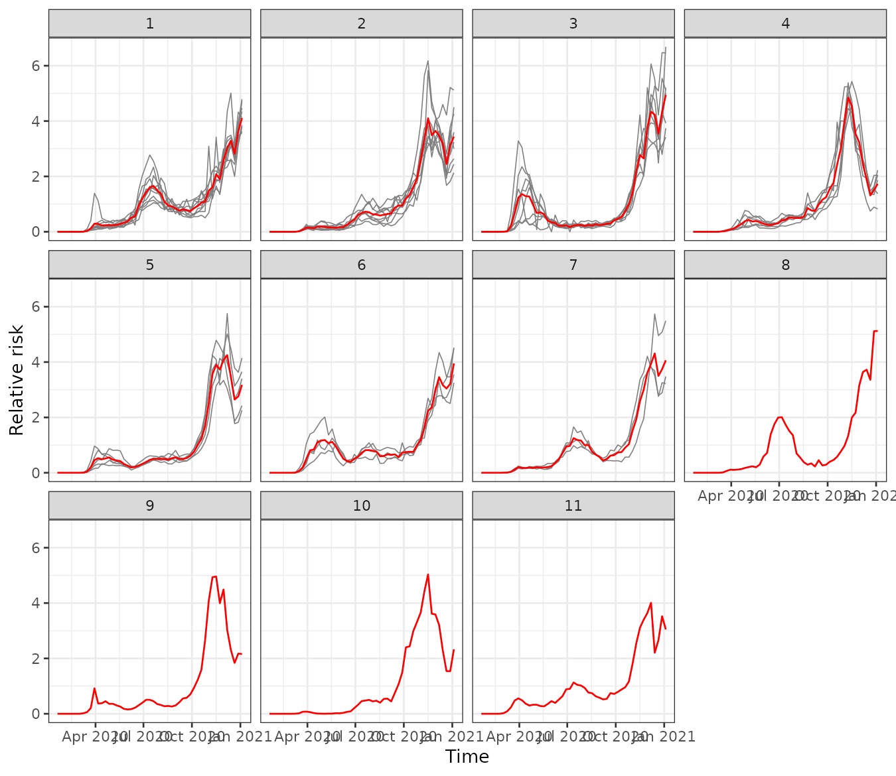

Covid-19 in US states during 2020
vg12-covid-usa.RmdIn this vignette, we use sfclust to identify US states
with similar relative risk of Covid-19 during 2020.
Load packages and data
library(sfclust)
library(stars)
#> Loading required package: abind
#> Loading required package: sf
#> Linking to GEOS 3.12.1, GDAL 3.8.4, PROJ 9.4.0; sf_use_s2() is TRUE
library(ggplot2)
library(dplyr)
#>
#> Attaching package: 'dplyr'
#> The following objects are masked from 'package:stats':
#>
#> filter, lag
#> The following objects are masked from 'package:base':
#>
#> intersect, setdiff, setequal, unionThe data for this application can be found at our github repository:
https://github.com/ErickChacon/sfclust/blob/main/tools/data/usacovid.rds.
This data contains the weekly information of the number of
cases, the population size and the number of
expected cases for 49 states.
usacovid <- readRDS(here::here(file.path("tools", "data", "usacovid.rds")))
usacovid
#> stars object with 2 dimensions and 3 attributes
#> attribute(s):
#> Min. 1st Qu. Median Mean 3rd Qu.
#> cases 0.0000 387.000 2921.000 8862.738 8653.00
#> population 4072852.0000 13333320.000 32645312.000 45820355.000 51060352.00
#> expected 175.6667 2934.647 6013.216 8862.738 11052.02
#> Max.
#> cases 316910.00
#> population 274041320.00
#> expected 55213.08
#> dimension(s):
#> from to offset delta refsys point
#> time 1 51 2020-01-20 7 days Date FALSE
#> space 1 49 NA NA WGS 84 FALSE
#> values
#> time NULL
#> space MULTIPOLYGON (((-88.05338...,...,MULTIPOLYGON (((-111.0467...Notice that the dimensions names are space and
time, take that in mind because sfclust
assumes that the dimension names are c("geometry", "time"),
so you will need to provide the dimension names when using
sfclust.
Exploratory analysis
We can visualize the weekly Covid-19 relative risk across 49 states. It shows higher levels of risk by the end of the year.
ggplot() +
geom_stars(aes(fill = cases/expected), data = usacovid) +
facet_wrap(~ time) +
scale_fill_distiller(palette = "RdBu") +
labs(fill = "Relative risk") +
theme_bw() +
theme(legend.position = "bottom")
Similarly we can observe the relative risk time series per state. It shows some peak around April, July and a big peak in December.
usacovid |>
st_set_dimensions("space", values = 1:ncol(usacovid)) |>
as_tibble() |>
ggplot() +
geom_line(aes(time, cases/expected, group = space, color = factor(space)), linewidth = 0.3) +
geom_point(aes(time, cases/expected, group = space, color = factor(space))) +
labs(y = "Relative risk", x = NULL) +
theme_bw() +
theme(legend.position = "none")Spatial clustering
Model fitting
In this application, because of the trends observed before, we will
assume that the logarithm relative risk can be explained by (i) a
polynomial trend with respect to time, (ii) an
autoregressive process over times units idt to capture
correlated temporal variation, and (iii) an additional unstructured
effect over id to capture any residual variation.
Additionally, we will start assuming that each state is a cluster, such
us we will start with 49 clusters. Also remember that in this case we
need to provide the dimension names stnames as explained
before.
formula <- cases ~ 1 + poly(time, 3) + f(idt, model = "ar1") + f(id)
geodata <- genclust(st_geometry(usacovid), nclust = 49)
set.seed(123)
result <- sfclust(usacovid, graphdata = geodata, stnames = c("space", "time"),
formula = formula, family = "poisson", E = expected,
niter = 4000, burnin = 0, thin = 10, nmessage = 10, nsave = 100,
path_save = "usacovid-mcmc.rds")
result#> Within-cluster formula:
#> cases ~ 1 + poly(time, 3) + f(idt, model = "ar1") + f(id)
#>
#> Clustering hyperparameters:
#> log(1-q) birth death change hyper
#> -0.6931472 0.4250000 0.4250000 0.1000000 0.0500000
#>
#> Clustering movement counts:
#> births deaths changes hypers
#> 36 74 12 187
#>
#> Log marginal likelihood (sample 400 out of 400): -19196.71Notice that 36 times there was an increase of number of clusters, 74 times clusters were merged, 12 times the composition were modified, and 187 time the minimum spanning tree has been modified. Also after thinning we keep 400 samples from a total of 4000, and the marginal likelihood achieve a value of -19196.77.
Results
summary(result, sort = TRUE)
#> Summary for clustering sample 400 out of 400
#>
#> Within-cluster formula:
#> cases ~ 1 + poly(time, 3) + f(idt, model = "ar1") + f(id)
#>
#> Counts per cluster:
#> 1 2 3 4 5 6 7 8 9 10 11
#> 10 9 8 6 5 4 3 1 1 1 1
#>
#> Log marginal likelihood: -19196.71The summary indicates that 7 clusters from 11 have more
than one member, where the biggest cluster includes 10 states, the
second 9, and so on.
plot(result, legend = TRUE, sort = TRUE)
The plot of our result indicates that:
- The biggest cluster is located in the southwest of US, followed by a second cluster in the middle, and a third cluster on the northwest.
- The mean relative risk per cluster has low value at the beginning of the year and higher values by the end of the year, which is related to the empirical risk observed.
- The algorithm increases the marginal likelihood in the first 100 samples (after thinning), and then is almost constant by sample 200.
us_fit <- fitted(result, sort = TRUE)
us_fit
#> stars object with 2 dimensions and 9 attributes
#> attribute(s):
#> Min. 1st Qu. Median Mean
#> mean -18.756909955 -1.849076e+00 -6.834142e-01 -2.124749e+00
#> sd 0.001776338 1.074621e-02 1.849090e-02 1.442848e-01
#> 0.025quant -21.774831846 -1.940976e+00 -7.270388e-01 -2.411716e+00
#> 0.5quant -18.743482749 -1.849076e+00 -6.834142e-01 -2.123470e+00
#> 0.975quant -15.814701821 -1.749546e+00 -6.387514e-01 -1.845001e+00
#> mode -18.743328395 -1.849076e+00 -6.834142e-01 -2.123175e+00
#> kld 0.000000000 5.513189e-11 5.526687e-11 5.639992e-09
#> mean_cluster -18.756875140 -1.760756e+00 -6.846120e-01 -2.125807e+00
#> cluster 1.000000000 2.000000e+00 3.000000e+00 3.755102e+00
#> 3rd Qu. Max.
#> mean 2.489176e-01 1.898851e+00
#> sd 5.030386e-02 1.847165e+00
#> 0.025quant 2.254256e-01 1.841667e+00
#> 0.5quant 2.489176e-01 1.898851e+00
#> 0.975quant 2.762781e-01 1.956034e+00
#> mode 2.489176e-01 1.898851e+00
#> kld 5.556921e-11 3.198865e-07
#> mean_cluster 1.504234e-01 1.634518e+00
#> cluster 5.000000e+00 1.100000e+01
#> dimension(s):
#> from to offset delta refsys point
#> time 1 51 2020-01-20 7 days Date FALSE
#> space 1 49 NA NA WGS 84 FALSE
#> values
#> time NULL
#> space MULTIPOLYGON (((-88.05338...,...,MULTIPOLYGON (((-111.0467...The fitted function return an stars object
with prediction summaries after fitting, the cluster
assignment and the mean_cluster.
Empirical risk per cluster
We can use that information of the cluster assignment to visualize the empirical data per cluster.
usacovid$cluster <- us_fit$cluster
# convert stars to data frame per region and per cluster
usaaux <- usacovid |>
st_set_dimensions("space", values = 1:ncol(usacovid)) |>
as_tibble()
usacluster <- usaaux |>
group_by(time, cluster) |>
summarise(rr = mean(cases/expected) ) |>
ungroup()
#> `summarise()` has grouped output by 'time'. You can override using the
#> `.groups` argument.
# visualize empirical risk per cluster
usaaux |>
ggplot() +
geom_line(aes(time, cases/expected, group = space), color = "gray50", linewidth = 0.3) +
geom_line(aes(time, rr), usacluster, color = "red") +
facet_wrap(~ cluster, ncol = 4) +
theme_bw() +
labs(y = "Relative risk", x = "Time")
The graph above shows the empirical risk per cluster. We can see that the biggest cluster has a increasing risk with a peak around July-August, while the second has a increasing trend until November-December with a decay by end of December. The third cluster has a bigger peak around March and later a higher risk by January. Similar particularities can be seen for cluster 4-7, while cluster 8-11 have more uncommon behaviour than the others.